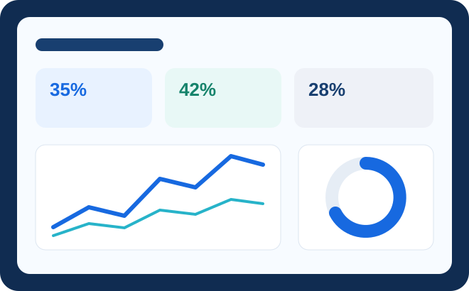

Trusted data, built for decisions
Michael Haries Namuco Ibea
Senior Data Engineer
I build governed ELT pipelines, analytics-ready warehouse layers, and dependable business marts across finance, sales, marketing, and logistics. My focus is practical: clarify source-of-truth logic, automate quality checks, and deliver data products that analysts and operators can trust.
Impact snapshot
Engineering outcomes that hold up in the business
Measured improvements from delivered work, grounded in reliability, reconciliation, performance, and team enablement.
Role fit
From messy sources to governed, decision-ready data
Eight years across cloud warehousing, analytics engineering, dimensional modeling, quality automation, and stakeholder discovery. Comfortable owning the full path from ingestion to tested marts, semantic definitions, executive dashboards, and AI-assisted querying.

Core strengths
Built around trust, clarity, and maintainable delivery
01
Analytics engineering
Layered dbt projects, dimensional models, reusable macros, tests, snapshots, documentation, and business-friendly semantic definitions.
02
Pipeline reliability
Airflow orchestration, freshness monitoring, schema-drift diagnosis, reconciliation, alerting, and reproducible CI/CD promotion.
03
Stakeholder translation
Discovery with controllers, operators, analysts, and executives to turn hidden business rules into shared metric logic.
Explore